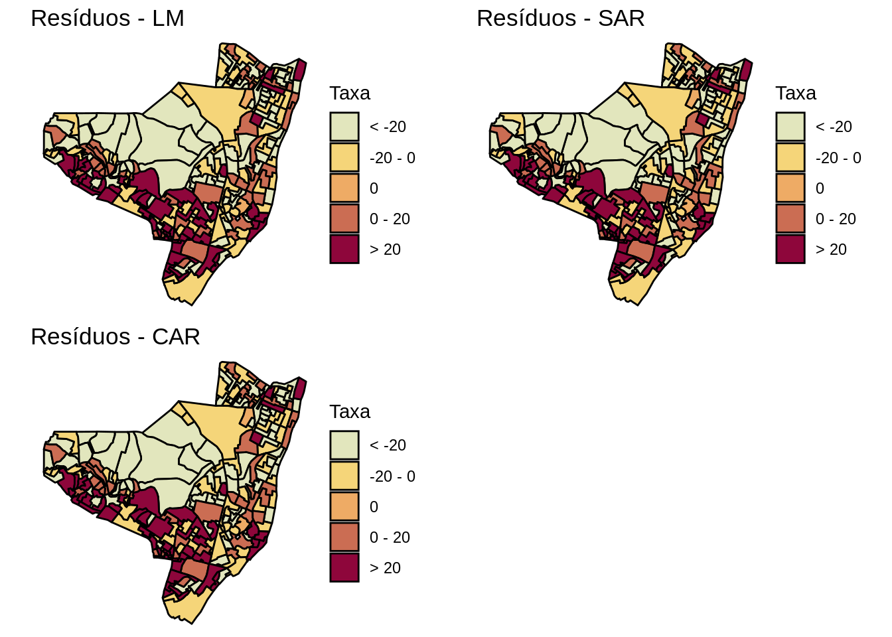

10 Dados de Área II
10.1 Modelos de Regressão Espacial
Hipótese de independência das observações em geral é Falsa ⇒ Dependência Espacial
Efeitos Espaciais ⇒ Se existir forte tendência ou correlação espacial, os resultados serão influenciados, apresentando associação estatı́stica onde não existe (e vice-versa);
Como verificar ? ⇒ Medir a autocorrelação espacial dos resı́duos da regressão (Índice de Moran dos resı́duos).
Autocorrelação espacial constatada ! E agora ? ⇒ Utilizar Modelos de regressão que incorporam efeitos espaciais:
Globais: utilizam um único parâmetro para capturar a estrutura de correlação espacial;
Locais: parâmetros variam continuamente no espaço.
10.2 Modelos com Efeitos Espaciais Globais
Suposição: É possı́vel capturar a estrutura de correlação espacial num único parâmetro (adicionado ao modelo de regressão).
Alternativas:
Spatial Lag Models (SAR): atribuem a autocorrelação espacial à variável dependente Y
- Spatial Error Models (CAR): atribuem a autocorrelação ao erro.
10.3 Spatial Lag Models (SAR)
Suposição: A variável \(Y_i\) depende dos valores da variável dependente das áreas vizinhas a \(i\):
\[Y_i = \rho W Y + X\beta + e_i\] Sendo,
\(rho\) é o coeficiente espacial auto-regressivo. É a medida de correlação espacial;
\(rho = 0\), se a autocorrelação espacial é nula
\(W\) É a matriz de vizinhança
10.4 Spatial Error Models (CAR)
Suposição: Os efeitos espaciais estão no ruído:
\[Y = X\beta + e\]
\[ e = \lambda W e + \xi\]
Sendo,
\(We\) os erros com efeitos espaciais
\(\lambda\) é a medida de correlação espacial
\(\xi\) é a componente do erro com variância constante e não correlacionada.
10.5 Modelos SAR vs CAR
Motivações diferentes, porém próximas em termos formais;
Premissa: processo espacial analisado é estacionário e pode ser capturado em um único parâmetro;
Porém isto nem sempre é verdade !
Verificar se padrões diversos de associação espacial estão presentes;
Indicadores Locais de Autocorrelação Espacial;
Resumindo, fazer uma boa análise exploratória de dados espaciais.
10.6 Modelos com Efeitos Espaciais Locais
Tais modelos consideram o espaço geográfico heterogêneo ou não-estacionário e a relação entre as variáveis dependentes e independentes assume padrões mais ou menos regionalizados;
Os parâmetros estimados podem ser mapeados para examinar as variações locais;
Idem para os erros dos parâmetros;
Possibilidade de testar, por exemplo, a hipótese da variação dos parâmetros da área de estudo ser ou não aleatória.
Ex:
Regressão Geograficamente Ponderada (GWR)
Modelos Bayesianos Completo
INLA (integrated nested Laplace approximations)
Ex: Vamos modelar espacialmente a taxa de detecção da hanseníase em Olinda/PE.
Antes de mais nada como na aula anterior vamos baixar o ZIP contendo os arquivos no formato shape
#opções para o Windows não se perder
options(download.file.method='libcurl',url.method='libcurl')
#local dos dados na rede
local <- 'https://gitlab.procc.fiocruz.br/oswaldo/eco2019/raw/master/dados/'
tmpdir <- tempdir()
download.file(paste0(local,'olinda.zip'),
destfile = paste0(tmpdir,'/olinda.zip'))
unzip(zipfile = paste0(tmpdir,'/olinda.zip'),exdir = tmpdir)
dir(tmpdir)Leando o shape file de Olinda/PE.
olinda.sf <- read_sf(paste0(tmpdir,'/olinda.shp'), crs = 5535)
# Calculando a taxa
olinda.sf$tx <- olinda.sf$CASES*10000/olinda.sf$POPFazendo o sumário estatístico da variável taxa.
AREA PERIMETER SETOR_ SETOR_ID VAR5 DENS_DEMO SET CASES POP DEPRIV geometry tx
Min. : 12817 Min. : 566 Min. : 2 Min. : 1 Min. : 1 Min. : 375 Min. : 1 Min. : 0.00 Min. : 337 Min. :0.007 POLYGON :241 Min. : 0.0
1st Qu.: 69889 1st Qu.:1306 1st Qu.: 62 1st Qu.: 61 1st Qu.: 63 1st Qu.: 8216 1st Qu.: 63 1st Qu.: 2.00 1st Qu.:1214 1st Qu.:0.199 epsg:5535 : 0 1st Qu.: 13.2
Median : 111374 Median :1719 Median :122 Median :121 Median :123 Median :13244 Median :123 Median : 4.00 Median :1411 Median :0.328 +proj=utm ...: 0 Median : 29.2
Mean : 182939 Mean :1996 Mean :122 Mean :122 Mean :123 Mean :15042 Mean :123 Mean : 5.94 Mean :1432 Mean :0.358 Mean : 40.9
3rd Qu.: 169730 3rd Qu.:2189 3rd Qu.:182 3rd Qu.:182 3rd Qu.:183 3rd Qu.:19671 3rd Qu.:183 3rd Qu.: 8.00 3rd Qu.:1636 3rd Qu.:0.509 3rd Qu.: 54.1
Max. :2774850 Max. :8861 Max. :244 Max. :245 Max. :243 Max. :53619 Max. :243 Max. :37.00 Max. :2764 Max. :0.907 Max. :230.4 Criando a matriz de vizinhaça por contiguidade.
Ajustando o modelo de regressão linear simples.
Call:
lm(formula = tx ~ DEPRIV, data = olinda.sf)
Residuals:
Min 1Q Median 3Q Max
-63.39 -25.33 -9.07 14.82 175.93
Coefficients:
Estimate Std. Error t value Pr(>|t|)
(Intercept) 19.06 4.93 3.86 0.00014 ***
DEPRIV 60.81 11.92 5.10 6.9e-07 ***
---
Signif. codes: 0 '***' 0.001 '**' 0.01 '*' 0.05 '.' 0.1 ' ' 1
Residual standard error: 38.3 on 239 degrees of freedom
Multiple R-squared: 0.0982, Adjusted R-squared: 0.0944
F-statistic: 26 on 1 and 239 DF, p-value: 6.86e-07Checando os residuos para verificar a presença de autocorrelação.
Moran I test under randomisation
data: olinda.lm$lmresid
weights: pesos.viz
Moran I statistic standard deviate = 7.4, p-value = 8e-14
alternative hypothesis: greater
sample estimates:
Moran I statistic Expectation Variance
0.286742 -0.004167 0.001551 Ajustando o modelo SAR.
Call:lagsarlm(formula = tx ~ DEPRIV, data = olinda.sf, listw = pesos.viz)
Residuals:
Min 1Q Median 3Q Max
-76.4924 -21.4142 -8.9083 14.7660 169.2090
Type: lag
Coefficients: (asymptotic standard errors)
Estimate Std. Error z value Pr(>|z|)
(Intercept) 8.6655 4.8474 1.7877 0.073831
DEPRIV 31.5886 10.7773 2.9310 0.003378
Rho: 0.4975, LR test value: 44.56, p-value: 2.4701e-11
Asymptotic standard error: 0.07355
z-value: 6.763, p-value: 1.3471e-11
Wald statistic: 45.74, p-value: 1.3471e-11
Log likelihood: -1197 for lag model
ML residual variance (sigma squared): 1146, (sigma: 33.86)
Number of observations: 241
Number of parameters estimated: 4
AIC: 2402, (AIC for lm: 2445)
LM test for residual autocorrelation
test value: 26.86, p-value: 2.1863e-07Checando os residuos para verificar a presença de autocorrelação.
Moran I test under randomisation
data: olinda.sar$lagresid
weights: pesos.viz
Moran I statistic standard deviate = -1.5, p-value = 0.9
alternative hypothesis: greater
sample estimates:
Moran I statistic Expectation Variance
-0.062890 -0.004167 0.001549 Ajustando o modelo CAR.
Call:errorsarlm(formula = tx ~ DEPRIV, data = olinda.sf, listw = pesos.viz)
Residuals:
Min 1Q Median 3Q Max
-75.7356 -22.1263 -9.0949 13.2751 171.2697
Type: error
Coefficients: (asymptotic standard errors)
Estimate Std. Error z value Pr(>|z|)
(Intercept) 30.6921 6.5681 4.6729 2.97e-06
DEPRIV 25.1999 13.3899 1.8820 0.05983
Lambda: 0.5098, LR test value: 39.59, p-value: 3.1416e-10
Asymptotic standard error: 0.07399
z-value: 6.89, p-value: 5.5955e-12
Wald statistic: 47.47, p-value: 5.5955e-12
Log likelihood: -1200 for error model
ML residual variance (sigma squared): 1167, (sigma: 34.16)
Number of observations: 241
Number of parameters estimated: 4
AIC: 2407, (AIC for lm: 2445)Checando os residuos para verificar a presença de autocorrelação.
Moran I test under randomisation
data: olinda.car$carresid
weights: pesos.viz
Moran I statistic standard deviate = -1.1, p-value = 0.9
alternative hypothesis: greater
sample estimates:
Moran I statistic Expectation Variance
-0.048484 -0.004167 0.001548 Mapeando os valores observados e preditos dos modelos ajustados
library(colorspace) #
olinda.sf$brks <- cut(olinda.sf$tx, include.lowest=TRUE, right=TRUE,
breaks=c(-0.01, 0, 15, 30, 45, 100, 231),
labels=c("0", "0 - 15", "15 - 30", "30 - 45", "45 - 100", "> 100"))
tx.bruta <- ggplot(olinda.sf) +
geom_sf(aes(fill = brks), color = 'black') +
ggtitle("Taxa Bruta") +
scale_fill_discrete_sequential(palette ='Heat',
c1=80,c2 =30,l1=30,l2=90,p1=0.2,p2=1.5,
na.value = "grey75",
drop=FALSE,
name='Taxa') +
theme_void()
olinda.sf$brks.lm <- cut(olinda.lm$fitted.values, include.lowest=TRUE, right=TRUE,
breaks=c(-0.01, 0, 15, 30, 45, 100, 231),
labels=c("0", "0 - 15", "15 - 30", "30 - 45", "45 - 100", "> 100"))
tx.lm <- ggplot(olinda.sf) +
geom_sf(aes(fill = brks.lm), color = 'black') +
ggtitle("Taxa Predita - LM") +
scale_fill_discrete_sequential(palette ='Heat',
c1=80,c2 =30,l1=30,l2=90,p1=0.2,p2=1.5,
na.value = "grey75",
drop=FALSE,
name='Taxa') +
theme_void()
olinda.sf$brks.sar <- cut(olinda.sar$fitted.values, include.lowest=TRUE, right=TRUE,
breaks=c(-0.01, 0, 15, 30, 45, 100, 231),
labels=c("0", "0 - 15", "15 - 30", "30 - 45", "45 - 100", "> 100"))
tx.sar <- ggplot(olinda.sf) +
geom_sf(aes(fill = brks.sar), color = 'black') +
ggtitle("Taxa Predita - SAR") +
scale_fill_discrete_sequential(palette ='Heat',
c1=80,c2 =30,l1=30,l2=90,p1=0.2,p2=1.5,
na.value = "grey75",
drop=FALSE,
name='Taxa') +
theme_void()
olinda.sf$brks.car <- cut(olinda.car$fitted.values, include.lowest=TRUE, right=TRUE,
breaks=c(-0.01, 0, 15, 30, 45, 100, 231),
labels=c("0", "0 - 15", "15 - 30", "30 - 45", "45 - 100", "> 100"))
tx.car <- ggplot(olinda.sf) +
geom_sf(aes(fill = brks.car), color = 'black') +
ggtitle("Taxa Predita - CAR") +
scale_fill_discrete_sequential(palette ='Heat',
c1=80,c2 =30,l1=30,l2=90,p1=0.2,p2=1.5,
na.value = "grey75",
drop=FALSE,
name='Taxa') +
theme_void()
library(gridExtra)
grid.arrange(tx.bruta, tx.lm, tx.sar, tx.car, ncol=2)Verificando a distribuição dos resíduos.
library(vioplot)
vioplot(olinda.lm$residuals, olinda.sar$residuals, olinda.car$residuals, names=c("LM", "SAR", "CAR"),
col="gold")[1] -76.49 175.93Mapeando a distribuição dos resíduos.
olinda.sf$brks.res.lm <- cut(olinda.lm$residuals, include.lowest=TRUE, right=TRUE,
breaks=c(-77, -20, -1, 1, 20, 176),
labels=c("< -20", "-20 - 0", "0", "0 - 20", "> 20"))
res.lm <- ggplot(olinda.sf) +
geom_sf(aes(fill = brks.res.lm), color = 'black') +
ggtitle("Resíduos - LM") +
scale_fill_discrete_sequential(palette ='Heat',
na.value = "grey75",
name='Taxa') +
theme_void()
olinda.sf$brks.res.sar <- cut(olinda.sar$residuals, include.lowest=TRUE, right=TRUE,
breaks=c(-77, -20, -1, 1, 20, 176),
labels=c("< -20", "-20 - 0", "0", "0 - 20", "> 20"))
res.sar <- ggplot(olinda.sf) +
geom_sf(aes(fill = brks.res.lm), color = 'black') +
ggtitle("Resíduos - SAR") +
scale_fill_discrete_sequential(palette ='Heat',
na.value = "grey75",
name='Taxa') +
theme_void()
olinda.sf$brks.res.car <- cut(olinda.car$residuals, include.lowest=TRUE, right=TRUE,
breaks=c(-77, -20, -1, 1, 20, 176),
labels=c("< -20", "-20 - 0", "0", "0 - 20", "> 20"))
res.car <- ggplot(olinda.sf) +
geom_sf(aes(fill = brks.res.lm), color = 'black') +
ggtitle("Resíduos - CAR") +
scale_fill_discrete_sequential(palette ='Heat',
na.value = "grey75",
name='Taxa') +
theme_void()
library(gridExtra)
grid.arrange(res.lm, res.sar, res.car, ncol=2)
10.7 Modelos com Efeitos Espaciais Locais
Regressão Geograficamente Ponderada (GWR): Ajusta um modelo de regressão a cada ponto observado, ponderando todas as demais observações como função da distância deste ponto;
\[Y(s) = \beta(s)X+e\]
Sabendo que:
\(Y(s)\): É a variável que representa o processo no ponto \(s\);
\(\beta\): São os parâmetros estimados no ponto \(s\);
Para estimar os parâmetros desse modelo, a solução é o uso de um estimador baseado em mínimos quadrados generalizado por algum métodos de ajuste local (ex: kernel);
\[\beta(s) = (X^T W(s) X)^{-1}X^T W(s)Y\]
O ajuste local é feito de forma a garantir uma influência maior dos pontos mais próximos (como o kernel);
Valor da largura de banda;
As duas funções mais usadas para o cálculo dos pesos é a “bi-square” e a “gaussiana”;
Tais modelos consideram o espaço geográfico heterogêneo ou não-estacionário e a relação entre as variáveis dependentes e independentes assume padrões mais ou menos regionalizados;
Os parâmetros estimados podem ser mapeados para examinar as variações locais;
Idem para os erros dos parâmetros;
Possibilidade de testar, por exemplo, a hipótese da variação dos parâmetros da área de estudo ser ou não aleatória;
O método GWR permite a realização de estudos de fenômenos com diferentes nı́veis de heterogeneidade espacial;
Mapeamentos de diagnóstico e dos parâmetros permitem novas interpretações e insights de padrões espaciais.
Ex: Vamos modelar a taxa de detecção de hanseníase em Olinada/PE utilizando um modelo GWR.
Primeiramente vamos transformar os centroides dos setores censitários em formato sp, pois iremnos precisar das colunas referentes as coordenadas.
centroides <- st_centroid(st_geometry(olinda.sf))
centroides.sp <- as.data.frame(as_Spatial(centroides))
names(centroides.sp) <- c('X','Y')
plot(centroides.sp)Precisamos estimar a largura de banda “ideal” para o kernel
# Biblioteca para ajustar o modelos GWR
library(spgwr)
GWRbanda <- gwr.sel(tx ~ DEPRIV, data=olinda.sf, coords=cbind(centroides.sp$X,centroides.sp$Y) , adapt=T) Adaptive q: 0.382 CV score: 317689
Adaptive q: 0.618 CV score: 333605
Adaptive q: 0.2361 CV score: 296459
Adaptive q: 0.1459 CV score: 279322
Adaptive q: 0.09017 CV score: 269226
Adaptive q: 0.05573 CV score: 260430
Adaptive q: 0.03444 CV score: 256832
Adaptive q: 0.02129 CV score: 261631
Adaptive q: 0.03963 CV score: 255671
Adaptive q: 0.04162 CV score: 255356
Adaptive q: 0.04701 CV score: 257702
Adaptive q: 0.04368 CV score: 256161
Adaptive q: 0.04121 CV score: 255348
Adaptive q: 0.04134 CV score: 255331
Adaptive q: 0.0414 CV score: 255323
Adaptive q: 0.04148 CV score: 255312
Adaptive q: 0.04154 CV score: 255326
Adaptive q: 0.04144 CV score: 255317
Adaptive q: 0.04148 CV score: 255312 [1] 0.04148Ajustando o modelo GWR
gwr.model = gwr(tx ~ DEPRIV, data=olinda.sf, coords=cbind(centroides.sp$X,centroides.sp$Y), adapt=GWRbanda, hatmatrix=TRUE, se.fit=TRUE)
gwr.modelCall:
gwr(formula = tx ~ DEPRIV, data = olinda.sf, coords = cbind(centroides.sp$X,
centroides.sp$Y), adapt = GWRbanda, hatmatrix = TRUE, se.fit = TRUE)
Kernel function: gwr.Gauss
Adaptive quantile: 0.04148 (about 9 of 241 data points)
Summary of GWR coefficient estimates at data points:
Min. 1st Qu. Median 3rd Qu. Max. Global
X.Intercept. 6.23 20.51 32.73 46.75 94.12 19.1
DEPRIV -49.77 -8.64 15.11 31.96 100.19 60.8
Number of data points: 241
Effective number of parameters (residual: 2traceS - traceS'S): 33.78
Effective degrees of freedom (residual: 2traceS - traceS'S): 207.2
Sigma (residual: 2traceS - traceS'S): 32.03
Effective number of parameters (model: traceS): 24.11
Effective degrees of freedom (model: traceS): 216.9
Sigma (model: traceS): 31.3
Sigma (ML): 29.7
AICc (GWR p. 61, eq 2.33; p. 96, eq. 4.21): 2375
AIC (GWR p. 96, eq. 4.22): 2343
Residual sum of squares: 212532
Quasi-global R2: 0.4532 Colocando a saída do modelo dentro de um dataframe.
sum.w X.Intercept. DEPRIV X.Intercept._se DEPRIV_se gwr.e pred pred.se localR2 X.Intercept._se_EDF DEPRIV_se_EDF pred.se.1 coord.x coord.y
1 19.33 29.75 -36.58 10.66 38.47 14.995 14.68 8.464 0.1864 10.91 39.36 8.659 295460 9120358
2 17.44 32.35 -44.33 12.16 43.38 13.805 24.90 6.684 0.1933 12.44 44.38 6.839 295779 9120237
3 17.20 34.14 -49.45 12.39 42.78 4.575 24.65 6.360 0.1766 12.67 43.76 6.507 296164 9120064
4 16.51 31.31 -43.95 12.87 45.91 -4.908 10.57 11.935 0.2109 13.16 46.97 12.210 295534 9119924
5 15.27 32.60 -48.49 13.72 48.56 -11.850 17.95 6.766 0.2161 14.04 49.68 6.922 295734 9119840
6 19.08 33.43 -46.53 11.15 37.99 6.203 28.92 8.094 0.1523 11.41 38.87 8.281 296498 9120007Verificando a distribuição dos coeficientes de regressão para a variável DEPRIVED
Verificando a distribuição dos localR2
Incorporando alguns parâmetros de saída do modelo na tabela olinda.sf
olinda.sf$coefDEPRIV<-results$DEPRIV
olinda.sf$localR2<-results$localR2
olinda.sf$pred.gwr<-results$predDefinindo as paletes de cores para a construção dos mapas.
[1] "BottleRocket1" "BottleRocket2" "Rushmore1" "Rushmore" "Royal1" "Royal2" "Zissou1" "Darjeeling1" "Darjeeling2" "Chevalier1" "FantasticFox1" "Moonrise1" "Moonrise2" "Moonrise3" "Cavalcanti1" "GrandBudapest1" "GrandBudapest2" "IsleofDogs1" "IsleofDogs2" Mapa dos coeficientes de regressão para a variável DEPRIVED
ggplot(olinda.sf) +
geom_sf(aes(fill = coefDEPRIV), color = 'black') +
scale_fill_gradientn(colours = pal) +
ggtitle("Distribuição dos coef. var. DEPRIV") +
theme_void()Mapa dos coeficientes de determinação regionalizados (\(R^2\) local).
ggplot(olinda.sf) +
geom_sf(aes(fill = localR2), color = 'black') +
scale_fill_gradientn(colours = pal) +
ggtitle("R² local") +
theme_void()Mapa dos valores preditos a partir do GWR.
ggplot(olinda.sf) +
geom_sf(aes(fill = pred.gwr), color = 'black') +
scale_fill_gradientn(colours = pal) +
ggtitle("Valores Preditos do GWR") +
theme_void()
Vewrificando o processo de predição do modelo.
[1] 0.681Verificando a autocorrelação espacial dos resíduos.
Moran I test under randomisation
data: (olinda.sf$tx - olinda.sf$pred.gwr)
weights: pesos.viz
Moran I statistic standard deviate = -0.78, p-value = 0.8
alternative hypothesis: greater
sample estimates:
Moran I statistic Expectation Variance
-0.034834 -0.004167 0.001545 Podemos verificar que a hipótese de autocorrelaçãofoi descartada.
10.8 ERRATA
O pacote spdep vai mudar e a partir da próxima versão não vais mais disponibilizar as funções de modelagem para SAR e CAR . O pacote spatialreg (Spatial Regression Analysis) devera ser usado. A função ** spautolm()** deve ser usada tanto para SAR quanto para o CAR usando a especificação family=“CAR” , family=“SAR” ou ainda family=“MA” este ultimo para modelos de médias moveis espaciais.
10.9 Bibliografia sugerida
Applied Spatial Data Analysis with R; Roger S. Bivand, Edzer Pebesma , Virgilio Gomez-Rubio Springer; Edição: 2nd ed. 2013
Fotheringham, A. S., Brunsdon, C., and Charlton, M. E. Geographically Weighted Regression: The Analysis of Spatially Varying Relationships. Wiley, Chichester. 2002.
Lloyd, C. D. (2007). Local Models for Spatial Analysis. CRC, Boca Raton. Schabenberger, O. and Gotway, C. A. Statistical Methods for Spatial Data Analysis. Chapman & Hall, London. 2005.
Ver Hoef, Jay M.; Hanks, Ephraim M.; Hooten, Mevin B. On the relationship between conditional (CAR) and simultaneous (SAR) autoregressive models. Spatial statistics, v. 25, p. 68-85, 2018.
Waller, L. A. and Gotway, C. A. Applied Spatial Statistics for Public Health Data. Wiley, Hoboken, NJ. 2004.
Ward, M.D. and K.S. Gleditsch. Spatial Regression Models. Thousand Oaks, CA: Sage. 2008.
Wheeler, D. and Tiefelsdorf, M. Multicollinearity and correlation among local regression coefficients in geographically weighted regression. Journal of Geograph- ical Systems, 7:161–187. 2005.
- Online